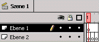
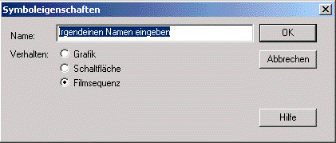
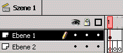
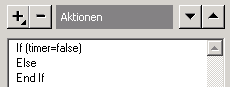
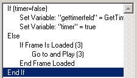
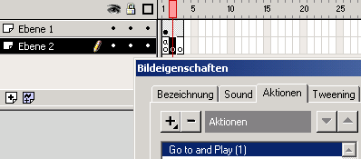
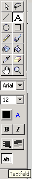
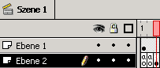
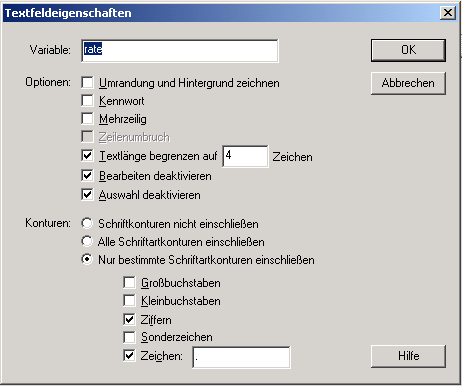
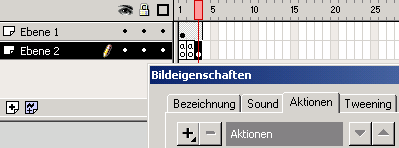

Verbindungsgeschwindigkeit
mit Flash4 messen
Thema:
|
Verbindungsgeschwindigkeit mit Flash4 messen |
Description:
|
Geschwindigkeit messen, mit der ein Flashfilm
geladen wird.
|
Keywords:
|
Flash, Verbindungsrate, Rate, KB/s, ConnectRater,
Verbindungsgeschwindigkeit
|
Author:
|
Joscha
Feth |
Date:
|
23.02.2000
|
Doc-ID:
|
99-001
|
URL:
|
http://www.flashworker.de/tutorial/99/001.html
|
Version:
|
1.0
|
Änderungen:
|
keine
|
Anforderungen:
|
Flash 4
|
Vorkenntnisse:
|
Basiswissen empfohlen, es wird aber alles ausführlich
erklärt.
|
Download:
|
PC: "javascript_cgi.fla", 234 kB
MAC: "javascript_cgi.sit", 352 kB
|
|
Einleitung
In diesem Tutorial wird beschrieben, wie sich die Geschwindigkeit mit der ein
Benutzer mit dem Internet bzw. dem Server verbunden ist, in Flash auslesen und
weiterverwendet werden kann.
ANMERKUNG: Der Connectrater funktioniert nicht offline, da dann die Geschwindigkeit
der Festplatte angezeigt wird, genauso wenn er schon einmal aufgerufen wurde
und noch im Cache oder im Speicher ist.
Es wird Basiswissen empfohlen, aber nicht zwingend vorausgesetzt.
Der fertige Connectrater zum Anschauen.
Erstellen eines Movieclips
Als erstes brauchen wir ein Movie, mit der wir die Rate berechnen, es ist egal,
wie dieser heisst, wieviele Frames er hat, oder auf welcher Ebene dieser liegt.
Was wichtig ist, ist dass dieser Movieclip kein externes Flashfile ist, das
mit Loadmovie ind den Film geladen wird, da die Connectrate auf dem Prinfla
"If Frame Loaded" basiert und dies nicht auf ein externes File greift
und dass der Film von der Dateigrösse her nicht zu klein ist, da aus dieser
Größe nachher die Rate bestimmt wird. Wenn er zu klein ist, dann
werden die Werte sehr ungenau, deshlab gilt der Satz, je mehr, desto besser.....optimal
ist eine Größe zwischen 15 und 20 KB, da der User dann nicht lange
warten muss, aber auch keinen falschen Wert ausgegeben bekommt.
1.Flash starten *g*
2.Im Menü "Datei" den Punkt "Neu" wählen.
3.Erstelle zwei Ebenen mit 3 Frames, sowie auf Ebene2 3 leere Schlüsselbilder:

4.Im Menü "Einfügen" den Punkt "Neues Symbol"
wählen, oder Strg+F8 drücken.

5.Erstelle dein Movie, nach deinen Wünschen und ziehe es auf die Ebene
mit den 3 durchgehenden Frames (hier:Ebene1).

Hinzufügen der
Aktionen
Nun fügen wir dem Fla die Funktionen hinzu, die seine Funktion ausmachen.
1.Doppelklick auf das erste Schlüsselbild von Ebene2

2.Dann müssen wir eine Bedingung einfügen:

3.Nun fügen wir die Funktion zu, die den Timer aufruft:
Die Bedingung ist notwendig, da nachher zum ersten Frame im Movie zurückgesprungen
wird und diese Aktion nicht noch einmal ausgeführt werden soll.
4.Jetzt fügen wir die Bedingung ein, die testet, ob das movie von vorher
und der restliche Film schon geladen ist (bei diesem fla ist das in Frame 3
der Fall, da wir ja nur 3 Frames haben) Man kann dies natürlich mit jedem
beliebigen Frame machen und auch zu jedem beliebigen Farme springen.

5.Nun müssen wir sicherstellen, dass wenn der Frame 3 nicht geladen ist,
dass das Movie dies nochmals überprüft, dazu erstellen wir in Frame
2 auf der Ebene mit den 3 Schlüsselbildern (hier: Ebene2) folgende Aktion:

6.Um die Rate auszugeben brauchen wir ein Textfeld mit einer Variablen, dieses
erstellen wir im Frame 3 unseres Fla's, geben ihm die Variable "rate"
(ohne Anführungsstriche), begrenzen die Textlänge auf 4 Zeichen und
fügen bei "Konturen" einen Punkt hinzu (NICHT VERGESSEN, da sonst
natürlich eine Zahl mit 4 Stellen ohne Punkt angezeigt wird), alle weiteren
Einstellungen sind optional, aber empfehlenswert. HINWEIS: Mach das Textfeld
auf 4 Zeichen genau lang, so dass weitere abgeschnitten werden, ich habe bei
der Ausgabe der Rate auf "Int()" verzichtet, da dass die Ausgabe verfälscht....bei
kleinen Zahlen um so mehr, und normalerweise haben viele Leute nicht mehr als
5 KB/s.
Ach ja, Die Textfeldeigenschaften lassen sich mit Strg+F aufrufen.
|  |

Dieses Textfeld muss ein feststehendes sein, da es sonst per Set Variable
nicht editierbar ist!
|
 |
7.Nun müssen Wir die Aktionen einfügen, die die Rate in das Textfeld
lädt, dies setzen wir in den drittenFrame auf der Ebene mit den Schlüsselbildern
(hier:Ebene2).

8.Die Aktionen lauten wie folgt:
9.Nun passen wir den Wert für "groesse" dem unseres Movies an.
GANZ WICHTIG: Als Größe musst du immer die KB-Zahl angeben, nie die Bytes.
10.Fertig!
Anpassungen in der HTML-Seite
Damit der Film nicht in den Cache des Browsers geladen wird, müsst ihr
folgende Meta-Tags in die HTML-Seite einsetzen:
ANMERKUNG: Funktioniert nicht mit jedem Browser und nicht immer! (noch ziemlich
buggy)
Falls ihr eine bessere Möglichkeit kennt: JoschaFeth@gmx.de
Hilfe bei Problemen
Hilfe bei Problemen:
eMail:JoschaFeth@gmx.de
Homepage: http://www.jofe.de
Bitte sendet mir alle Verbesserungen zu!